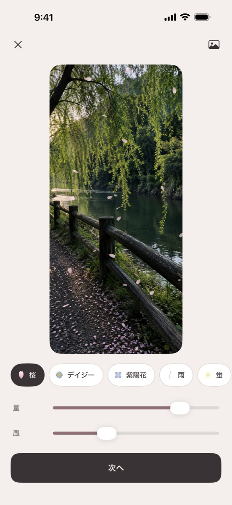

Driftfall
English自分の写真に、雪や桜の花びら、紅葉などを降らせるアプリです。ロック画面の壁紙にしたり、動く写真として送ったりできます。

できること
- 写真を選んで、降らせるものを選ぶ。降る量と風の強さを変えられます。
- Live Photoとして保存して、ロック画面の壁紙に。iPhoneの画面をつけたとき、少しのあいだ降り出します。
- つなぎ目なくループする短い動画にして送れます。
- 降らせられるのは14種類：桜、デイジー、紫陽花、雨、蛍、紅葉、銀杏、落ち葉、雪、羽、シャボン玉、紙吹雪、星くず、流れ星。
無料とPro
無料
- 14種類すべてを自分の写真で試せる
- 雨とシャボン玉は保存・送信もできる
Driftfall Pro
- 14種類すべてを保存して送れる
- 買い切り。サブスク・広告はありません。
よくある質問
壁紙にするには？保存したあと、設定＞壁紙＞新しい壁紙を追加＞写真を開いて、保存したLive Photoを選びます。
少ししか動かないiOSのLive Photo壁紙は、画面をつけたときに少しのあいだだけ動く仕組みです。長く見たいときは、動画で送ってください。
写真はどこに保存される？iPhoneの中だけです。アカウントは無く、どこにも送られません。プライバシーポリシーをご覧ください。
別のiPhoneでProを買った設定（歯車）を開いて「購入を復元」を押してください。
お問い合わせ
minariapps@gmail.com、またはアプリの設定（歯車）＞お問い合わせから。